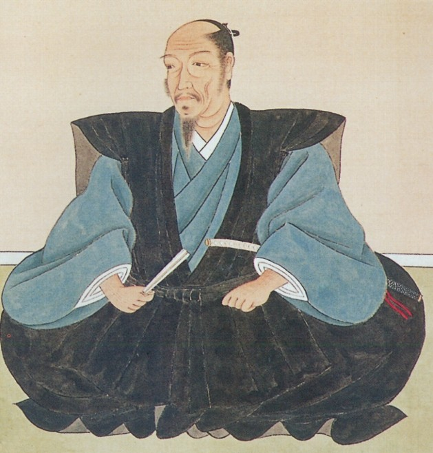
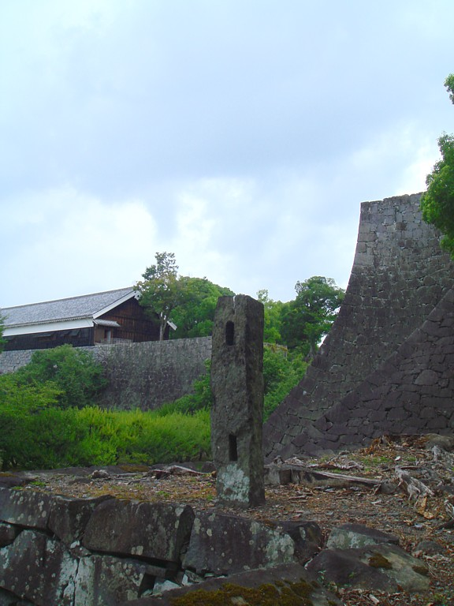
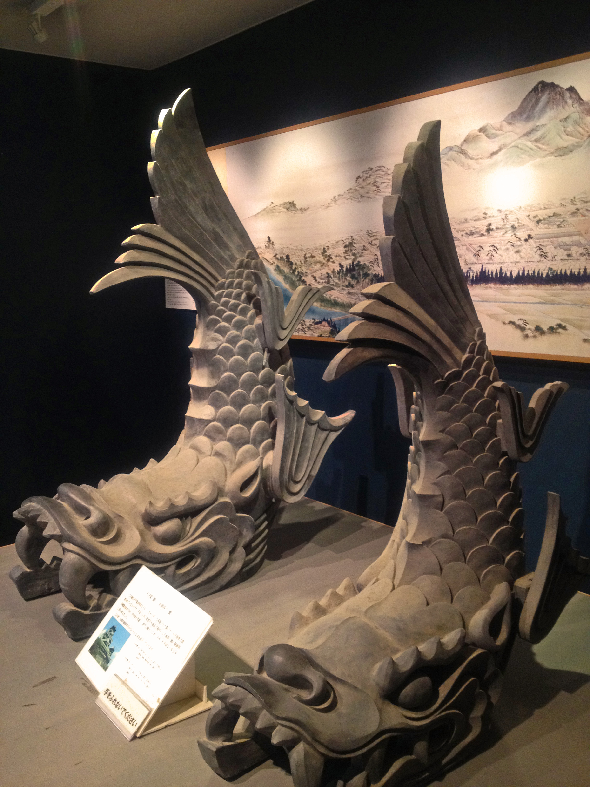
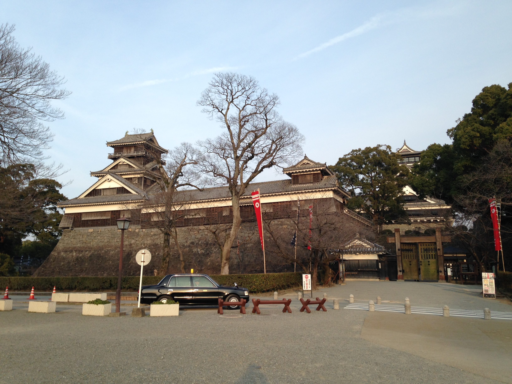
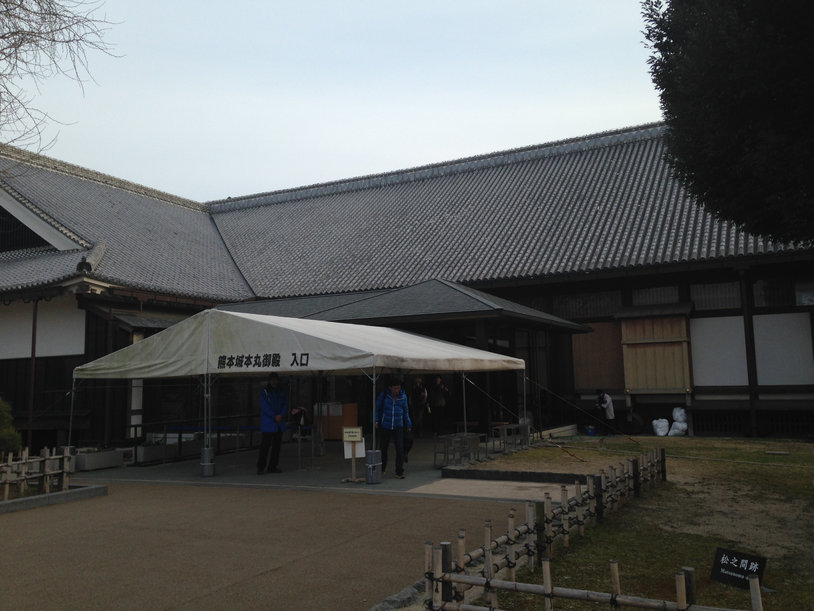
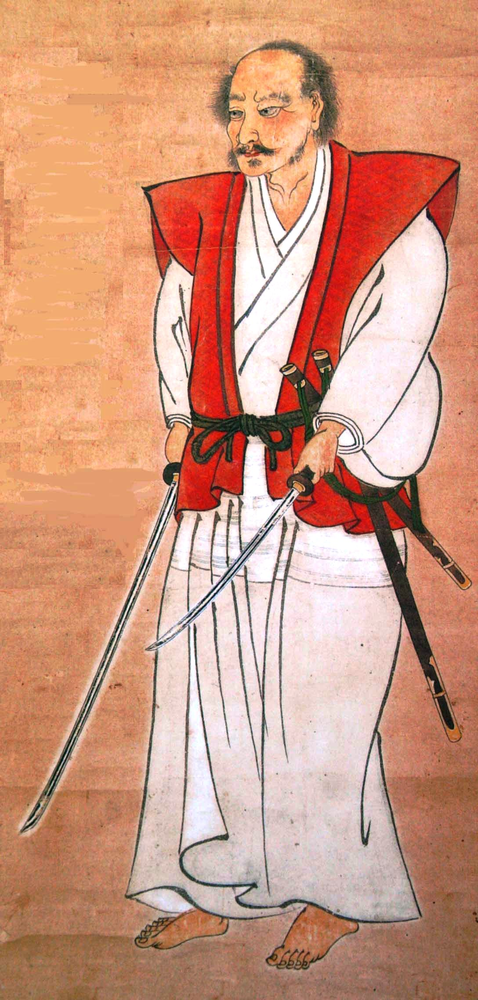
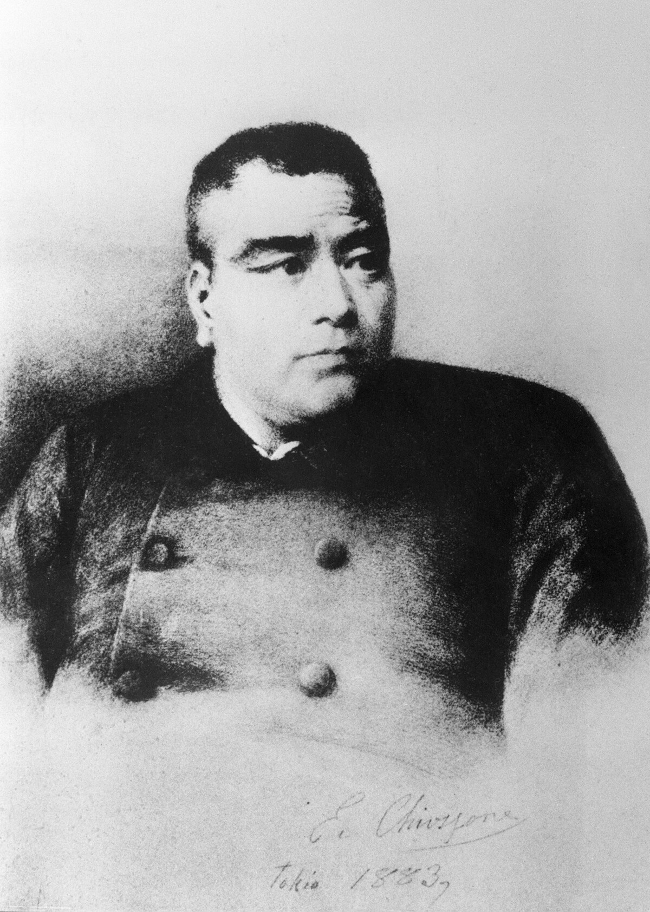
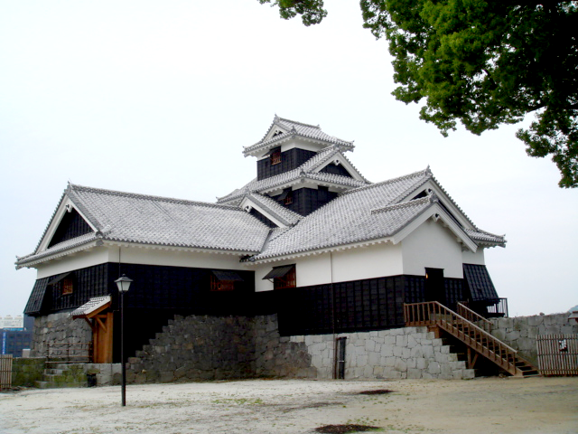

攝影 663highland / CC BY-SA 3.0
熊本城不只是一座漂亮的城。它是築城名手加藤清正畢生武略與土木智慧的結晶， 歷經細川家的文治、劍聖宮本武蔵的晚年、西南戰爭的烽火， 再到2016 熊本地震後的「見せる復興」。讀完這頁，你在現場看到的每一道石垣、每一座櫓，都會多出一段故事。
👉 每段故事的結尾，都有一張通往現場景點的卡片——讀完，就去走一遍。

加藤清正出身尾張，自幼追隨豐臣秀吉，於賤ヶ岳之戰嶄露頭角，名列「賤ヶ岳七本槍」。文禄・慶長之役（出兵朝鮮）中，留下「虎退治（打虎）」的傳說，更在蔚山城以寡敵眾、苦守籠城——這段死守的慘烈經驗，深深影響了他日後築城的思想。
他 27 歲入主肥後北半國，既是猛將，也是傑出的土木與治水專家，被後世尊為「築城名人」與「治水之神」。慶長 6 年（1601）動工、約慶長 12 年（1607）完成今日的熊本城。
清正把蔚山籠城的教訓全寫進了熊本城。整座城就是一部「如何撐過長期圍城」的教科書——這也是它最迷人的地方。

最具代表的防禦工藝，就是俗稱「武者返し」的石垣。底部坡度平緩、看似好爬，越往上反翹越急、近乎垂直的「扇之勾配」，讓武士甚至身手矯健的忍者都爬不上去，故得此名。現場抬頭看石垣頂端那道優美的弧線，就是清正流石垣的精髓。
🧱 二様の石垣同一處牆角、兩個時代的石垣並排——一眼讀出加藤流武者返し的扇之勾配。 →
大天守與小天守並立，外牆覆以黑色「下見板張」，在陽光下沉穩內斂，正是「黑色名城」之名的由來，與白壁的「白鷺城」姬路城恰成對比。
屋脊兩端的金色「鯱（しゃちほこ）」是虎頭魚身的想像生物，相傳能噴水滅火，是城的守護與威儀的象徵。熊本城與名古屋城、大阪城（一說姬路城）並稱「日本三名城」。

在多座櫓中，宇土櫓地位特殊：它外觀三層、內部五層，規模媲美一般城的天守，被譽為「第三天守」。更難得的是，它是築城當時就留存至今、且挺過西南戰爭戰火未燒的真品，屬國指定重要文化財。如今它正進行解體復原（2032 年完工目標），等於我們這代人見證了它最關鍵的一次重生。
🏛️ 宇土櫓目前解體復原中、不可入內，但從加藤神社、二の丸広場仍能遠望它古樸的身影。 →
本丸御殿是藩主理政與生活的殿堂，其中最豪華、格式最高的房間名為「昭君之間」，牆面與隔扇繪有中國前漢悲劇美女「王昭君」的故事，金碧輝煌。

1632 年加藤家改易，細川忠利入主熊本，細川氏統治肥後約 240 年、歷 11 代。相較清正的武，細川家帶來了文治與藝術的氣息。
晚年的「劍聖」宮本武蔵正是受細川家禮遇、客居熊本，在城西的靈巖洞閉關寫下兵法名著《五輪書》，並終老於此。一座城同時承載猛將清正與劍聖武蔵的身影，正是熊本城故事的厚度所在。

明治 10 年（1877），西郷隆盛率薩摩軍掀起西南戰爭，猛攻熊本城。鎮台司令谷干城率軍據城死守，籠城約 52 日，薩摩軍始終未能攻破清正所築的堅城。
諷刺的是，就在總攻前數日，天守與本丸御殿竟突然失火燒毀，是失火還是自燒，至今成謎。
「我並非敗給政府軍，而是敗給了築起這座城的——加藤清正公。」 —— 傳為西郷隆盛兵敗後之語
跨越三百年，清正的籠城智慧仍替後人擋下了千軍萬馬。這句話，正是熊本城「不落之城」威名最好的註腳。
🪨 飯田丸五階櫓2016 震災中僅靠一柱石垣撐住的「奇跡の一本石垣」——不屈精神跨越了兩場災難。 → ⚔️ 田原坂（古戰場）想把這場烽火走到現場？西南戰爭最慘烈的決戰地，就在熊本城外——見「周邊延伸」。 →清正不僅築城、治水，更致力於民生，深受肥後百姓愛戴，被親暱地稱為「清正公さん（せいしょこさん）」。城內的加藤神社即祭祀清正，至今香火鼎盛，是市民祈求勝運與平安之地——四百年來，他從未真正離開這座城與這片土地。
💧 治水之神的延伸清正的治水血脈也流向城外——通潤橋、水前寺湧泉，都在「周邊延伸」等你。 →
2016 年熊本地震重創全城：天守落瓦、石垣崩落約 3 萬㎡、多座櫓倒壞。其中飯田丸五階櫓僅靠一隅石垣撐住而未塌，這幕「奇跡の一本石垣」傳遍日本，成為不屈的象徵。
面對需時數十年（全體預計 2052 年完成）的修復，熊本城選擇了一條罕見的路——「見せる復興（讓人看見的復興）」：不遮掩傷痕，反而架起特別見学通路，邀請世人在重建的過程中一同見證。你此刻看到的，是一座正在重生的城，這份「進行式」的感動，是任何完工後的城都給不了的。
🌉 特別見学通路「見せる復興」的核心——與崩落石垣同高的高架步道，現在來才看得到。 →